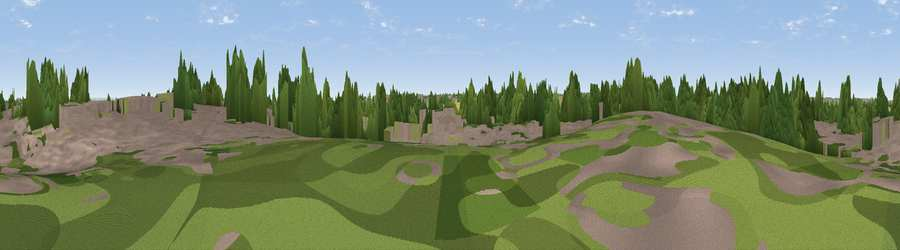

Viewpoint near Washingborough
#43666 in England · top 82% of its area beats it · near WashingboroughWhere it is
The exact computed spot (TF 02479 70052). Click the marker for map links.
The view, rendered

A 360° render of this exact spot computed from the terrain model, tree cover and land cover — summer colours, afternoon light, calibrated against photographs of famous viewpoints. Real trees, hedges and buildings will differ in detail.
The panorama
Grey silhouette: terrain skyline in each direction (720 bearings, Earth curvature and refraction included). Dashed green: skyline with trees (+15 m) and buildings (+8 m) as obstacles. Blue strip: how far the ground is visible on each bearing.
Where the view opens
Wedge length = distance to the farthest visible ground on that bearing (vegetation-aware). Rings at 10, 25 and 50 km.
What fills the view
29% cropland · 24% woodland · 24% grassland · 23% built-up
Angular shares of the visible panorama (visual magnitude), not map area. Landscape diversity 0.62 (0–1 Shannon).
Key numbers
More beautiful places nearby
The staircase of upgrades: each row has a higher view potential than everything closer. Driving times are estimates from straight-line distance, calibrated against real road routing — check an actual route before setting out.
| Place | Direction | Drive | Score |
|---|---|---|---|
| Viewpoint near Heighington | E · 1 km | ~4 min | 32.4 |
| Viewpoint near Bracebridge | WSW · 5 km | ~11 min | 37.5 |
| Lincoln Castle | WNW · 5 km | ~12 min | 43.8 |
| Viewpoint near Lincoln | WNW · 6 km | ~12 min | 54.0 |
| Viewpoint near Burton-by-Lincoln | NW · 9 km | ~17 min | 54.9 |
| Viewpoint near North Willingham | NE · 23 km | ~38 min | 55.1 |
| Viewpoint near Walesby | NNE · 25 km | ~41 min | 57.9 |
| Viewpoint near Claxby | NNE · 26 km | ~41 min | 61.7 |
53.21765, -0.46670 · source: osm peak · position refined by local search. Computed location — check access rights before visiting.